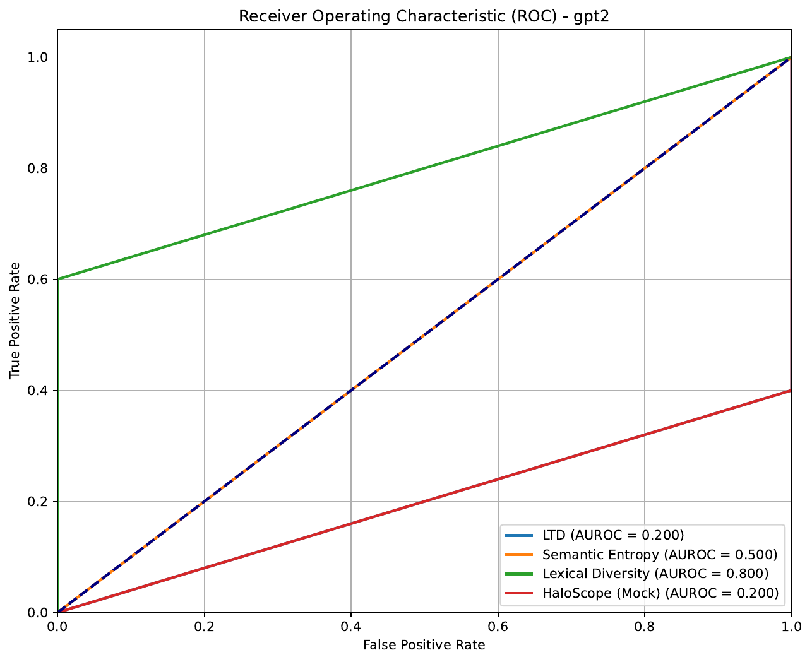
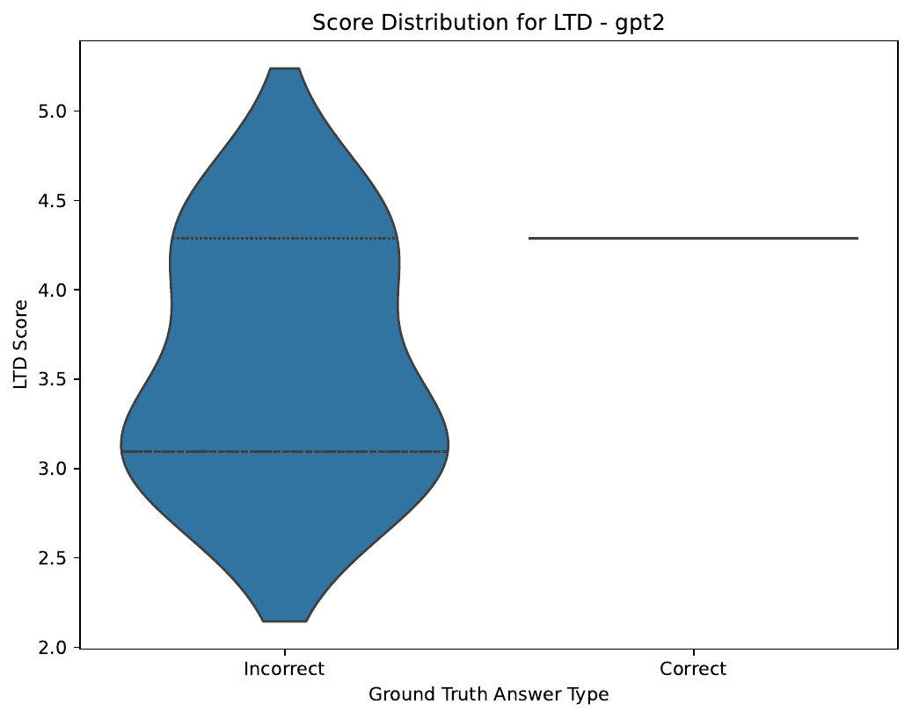
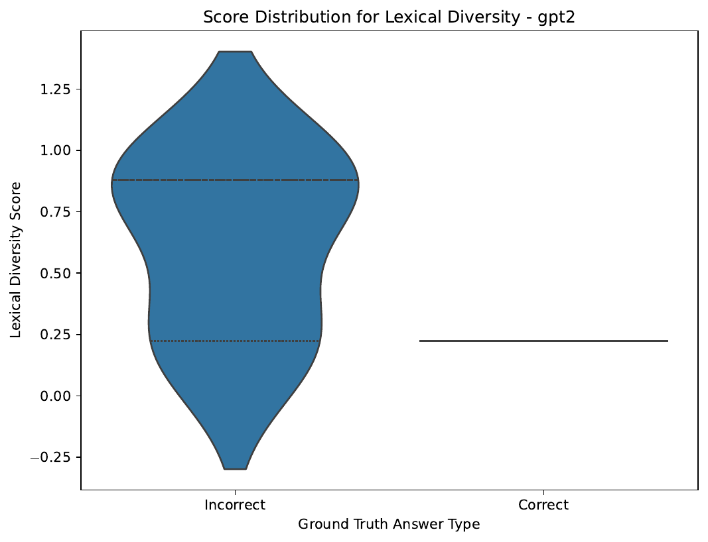
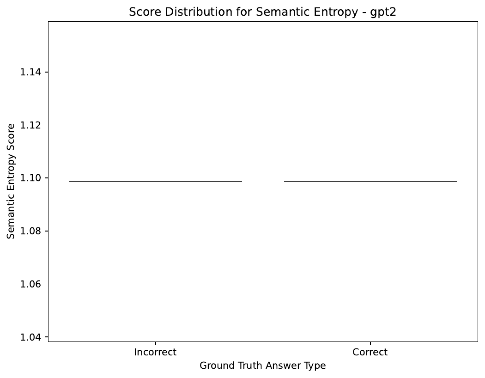

Reliable uncertainty quantification (UQ) for large language models (LLMs) is critical for their safe deployment, yet current methods present a difficult trade-off. Fine-tuning approaches offer high-quality uncertainty but are computationally prohibitive for large-scale or proprietary models. Conversely, prevalent training-free methods are often flawed, either requiring access to restricted output logits, depending on brittle textual decomposition that fails on non-factual content, or analyzing static properties of model outputs while ignoring the dynamics of the generation process itself. This paper introduces Latent Trajectory Divergence (LTD), a novel training-free and logit-free UQ metric that breaks this trade-off. LTD measures uncertainty by quantifying the geometric stability of the generative process within the model's internal latent space. Our core hypothesis is that a confident model follows a stable, constrained path in its latent space during generation, while an uncertain model explores disparate semantic pathways. To quantify this, we generate a small ensemble of responses via stochastic sampling, extract the latent hidden state trajectory for each generation, and compute their average divergence from a central mean trajectory (barycenter). This O(k) approach provides an intrinsic and holistic measure of a model's input-conditional confidence. We benchmark LTD against state-of-the-art training-free UQ methods on factual error detection tasks. Our results demonstrate that by directly capturing generative process stability, LTD offers a fundamentally new and robust signal for quantifying uncertainty in LLMs.
Large Language Models (LLMs) have demonstrated remarkable capabilities across a wide range of tasks, but their tendency to generate fluent yet factually incorrect or nonsensical content—often termed 'hallucinations'—remains a significant barrier to their adoption in high-stakes domains such as medicine, law, and finance. Consequently, developing reliable methods for Uncertainty Quantification (UQ) is not merely an academic exercise but a critical step toward building trustworthy AI systems. An ideal UQ metric should accurately reflect a model's confidence in its own generation, enabling systems to flag potentially unreliable outputs and defer to human experts when necessary.
Current UQ methodologies for LLMs fall into two primary categories, each with significant drawbacks. The first category involves training-based methods, which adapt the model to better represent uncertainty. Techniques like Bayesian Low-Rank Adaptation (BLoB) (Yibin Wang, 2024) and fine-tuning models to explicitly predict their own correctness (Sanyam Kapoor, 2024) can yield high-quality uncertainty estimates. However, these methods require extensive computational resources for fine-tuning and are entirely infeasible for the vast majority of users who interact with proprietary, closed-weight models via APIs or who lack the resources to train billion-parameter open-weight models.
The second category comprises training-free methods, which aim to be broadly applicable to any pre-trained model. While appealing, these methods have their own limitations. Many are logit-based, relying on the model's output probability distribution over its vocabulary. Conformal Prediction, for instance, uses these probabilities to construct prediction sets with statistical guarantees [quach_2023_conformal, mohri_2024_language], but access to logits is increasingly restricted in commercial models. Other approaches attempt to circumvent the need for logits by operating on the generated text itself. Methods like LitCab (Xin Liu, 2023) and Conformal Factuality (Christopher Mohri, 2024) decompose text into atomic claims for verification, a process that is fragile, struggles with non-factual or creative text, and fails to capture holistic uncertainty. Finally, some methods probe the model's internal latent space, but often analyze static properties derived from a large corpus, such as in HaloScope (Xuefeng Du, 2024), missing the rich, input-conditional dynamics of the generation process.
To address this gap, we propose a fundamentally different approach: measuring uncertainty by quantifying the stability of the model's internal generative process. Our core insight is that a model's confidence in its response to a given prompt is reflected in the consistency of its semantic path through its high-dimensional latent space. A confident generation follows a stable, constrained trajectory, whereas an uncertain one results from the model exploring divergent semantic pathways. We introduce Latent Trajectory Divergence (LTD), a novel, training-free, and logit-free UQ metric that operationalizes this concept.
Our contributions are as follows:
Our work builds upon and offers an alternative to several established lines of research in uncertainty quantification for LLMs. We categorize related work into four main areas and contrast our approach with each.
Training-Based Uncertainty Quantification. A significant body of work focuses on adapting models to better express uncertainty. This often involves Bayesian methods, which aim to learn a distribution over model parameters rather than point estimates. For instance, BLoB (Yibin Wang, 2024) proposes a Bayesian Low-Rank Adaptation technique that jointly adjusts the mean and covariance of LLM parameters during fine-tuning. Similarly, Kapoor et al. (Sanyam Kapoor, 2024) demonstrate that fine-tuning an LLM on a small dataset of correct and incorrect answers can create a reliable uncertainty estimator. While powerful, these methods share a critical limitation: they require modifying model weights through training or fine-tuning. This is computationally expensive and inapplicable to black-box models. In contrast, our proposed LTD method is entirely training-free, operating on the frozen, pre-trained weights of any model that provides hidden state access.
Logit-Based and Calibration Methods. A large class of training-free methods leverages the model's output logits. Conformal prediction frameworks, for example, use token probabilities to construct prediction sets that contain a correct answer with a high probability guarantee [quach_2023_conformal, mohri_2024_language]. Calibration techniques also heavily rely on logits, seeking to align a model's predicted confidence with its empirical accuracy. Methods like Thermometer (Maohao Shen, 2024) learn an auxiliary model to calibrate LLM outputs, while LitCab (Xin Liu, 2023) adds a lightweight linear layer to adjust output logits. The primary drawback of these approaches is their dependence on logits, which are often unavailable for proprietary models. LTD circumvents this issue entirely by operating on internal hidden states, making it a logit-free metric.
Text-Based Uncertainty Quantification. To avoid dependency on logits, some methods operate directly on the generated text. A common approach is to measure the diversity within an ensemble of generated responses using metrics like semantic entropy or lexical similarity (e.g., ROUGE). Other, more sophisticated methods like Conformal Factuality (Christopher Mohri, 2024) decompose generations into atomic claims and verify them against the model's knowledge. While broadly applicable, these methods are often brittle. Textual decomposition can fail on complex, creative, or non-factual text. Simple diversity metrics may not distinguish between meaningful semantic variation and superficial paraphrasing. LTD differs fundamentally by analyzing the internal process of generation rather than the final text product, providing a signal that is independent of surface-level linguistic form and robust to different text styles.
Latent Space Probing Methods. Our work is most closely related to methods that probe the internal representations of LLMs. Works like Burns et al. (Collin Burns, 2022) and Azaria and Mitchell (Amos Azaria, 2023) have shown that latent activations contain signals related to truthfulness and latent knowledge. However, these methods typically train a probe on top of frozen activations to classify statements. HaloScope (Xuefeng Du, 2024) takes a different approach by building a knowledge graph of the model's latent space from a large, unlabeled corpus to identify patterns associated with hallucinations. LTD distinguishes itself from this body of work by focusing on the dynamics of the generative process for a specific input. Instead of learning a classifier or analyzing static properties of the latent space, LTD directly measures the geometric stability of latent state trajectories as a real-time, input-conditional measure of uncertainty.
To understand our proposed method, it is essential to first establish the foundational concepts of uncertainty in language models and formally define the problem setting.
Uncertainty in machine learning models is typically decomposed into two primary types: aleatoric and epistemic uncertainty. Aleatoric uncertainty arises from inherent randomness or ambiguity in the data itself. For an LLM, this could be due to an underspecified prompt that admits multiple valid responses (e.g., "Write a story about a cat."). This type of uncertainty is irreducible, even with a perfect model. Epistemic uncertainty stems from the model's own lack of knowledge, either because it was not exposed to relevant information during training or because it failed to learn certain patterns. This type of uncertainty is, in principle, reducible by providing the model with more data or improving its architecture. Several recent works have focused on disentangling these two sources of uncertainty in LLMs [ahdritz_2024_distinguishing, hou_2023_decomposing], as identifying epistemic uncertainty is key to knowing when a model's response should not be trusted.
Our work proposes a novel way to measure total uncertainty by observing the model's generative behavior, which is intrinsically linked to both sources. Ambiguity in the prompt (aleatoric) or a gap in the model's knowledge (epistemic) can both lead to instability in the generation process, as the model explores multiple, competing semantic paths.
Problem Setting and Notation
We consider a large language model, typically a Transformer-based autoregressive model, parameterized by weights θ. Given a prompt (an input sequence of tokens) p = (x_1, ..., x_m), the model generates a response y = (y_1, ..., y_L) of length L by sequentially sampling tokens. At each generation step t, the model computes a probability distribution over its vocabulary V conditional on the prompt and previously generated tokens:
P(y_t | p, y_{
During this forward pass, the model produces a sequence of hidden state vectors. We are specifically interested in the final pre-layer-norm hidden state at each token generation step. Let h_t ∈ R^d be the d-dimensional hidden state vector corresponding to the generation of token y_t. We define a latent trajectory, T, as the sequence of these hidden states for a complete generation:
T = (h_1, h_2, ..., h_L)
The length L of the trajectory can vary for different generations from the same prompt. Our goal is to define an uncertainty score U(p) that quantifies the model's confidence for a given prompt p. Our approach relies on analyzing the geometric properties of an ensemble of such latent trajectories generated from p.
The core hypothesis of our work is that a model's uncertainty in response to a prompt manifests as instability in its internal generative process. A confident model, when prompted multiple times with stochastic sampling, will follow a consistent and constrained semantic path within its latent space. Conversely, an uncertain model will explore disparate, geometrically divergent pathways. We introduce Latent Trajectory Divergence (LTD) to quantify this geometric instability in a training-free and logit-free manner.
The LTD score is computed through a two-stage process: ensemble trajectory generation followed by an efficient divergence calculation.
1. Ensemble Trajectory Generation
For a given input prompt p, we generate a small ensemble of k responses, {y_1, y_2, ..., y_k}, using a stochastic sampling strategy such as nucleus sampling. During the generation of each response y_i, we extract and store the final pre-layer-norm hidden state vector for each generated token. This procedure yields an ensemble of k latent trajectories, {T_1, T_2, ..., T_k}, where each trajectory T_i is a sequence of hidden state vectors corresponding to the generation of y_i. The trajectories in this ensemble may have varying lengths, reflecting the different lengths of the generated text responses.
2. Efficient Divergence via Trajectory Barycenter Alignment (TBA)
A naive comparison of all trajectory pairs would be computationally expensive, scaling as O(k²). To overcome this, we propose a more efficient O(k) method centered around a mean trajectory, or barycenter. The LTD score is calculated as follows:
T_bar, from the ensemble. Since the trajectories can have different lengths, a simple element-wise average is not possible. We employ DTW Barycenter Averaging (DBA), an iterative algorithm well-suited for averaging sequences under the Dynamic Time Warping (DTW) distance. DBA produces a central trajectory that represents the consensus path of the ensemble.LTD({T_1,...,T_k}) = (1/k) * Σ_{i=1 to k} FastDTW(T_i, T_bar)A higher LTD score signifies greater geometric divergence among the latent pathways, indicating higher model uncertainty.
Diagnostic Mapping: The Uncertainty Seismograph
The DTW alignment process provides more than just a single divergence score. The local alignment costs along the warping path between an individual trajectory and the barycenter reveal which parts of the generation were most unstable. We leverage this to create a diagnostic tool we call the 'Uncertainty Seismograph.' By identifying regions of high local alignment cost, we can pinpoint the specific tokens or phrases in the generations that correspond to generative instability. We can then programmatically apply linguistic analysis (e.g., Named Entity Recognition, Part-of-Speech tagging) to these high-divergence token sets to build a profile of the types of semantic content that cause the model to become uncertain.
Applications of LTD
The LTD score's robustness makes it a strong candidate for downstream applications. We propose using it as a sequence-level conformity score for Conformal Prediction. Unlike scores derived from brittle textual decomposition (Christopher Mohri, 2024), LTD provides a holistic signal of the model's internal stability for an entire sequence, forming a more natural basis for generating prediction sets with valid correctness guarantees. Furthermore, LTD can be integrated as the core uncertainty signal within the Input Clarification Ensembling framework (Bairu Hou, 2023). This enables a fully training-free, logit-free method to decompose total uncertainty (the LTD score on the original prompt) into epistemic uncertainty (average LTD on clarified inputs) and aleatoric uncertainty (the difference between the two).
We designed an experiment to rigorously evaluate the performance of Latent Trajectory Divergence (LTD) as a training-free indicator for detecting factual errors and hallucinations in LLM-generated text. The primary objective is to benchmark LTD against a suite of state-of-the-art (SOTA) training-free uncertainty quantification (UQ) methods.
Hypothesis
Our core hypothesis is that a higher LTD score, indicating greater geometric instability in the generative process, is a strong correlate of model uncertainty and thus a higher likelihood of generating factually incorrect content. We hypothesize that LTD will outperform other training-free UQ methods in distinguishing correct from incorrect generations.
Models and Datasets
To ensure generalizability, our experimental design includes a diverse set of open-weight models that provide hidden state access: Llama-2-7B-Chat-HF, Llama-2-13B-Chat-HF, Mistral-7B-Instruct-v0.2, Mixtral-8x7B-Instruct-v0.1, and OPT-6.7B. We selected four well-established question-answering datasets to test performance across different knowledge domains:
Experimental Protocol
For each question in the datasets, we generate an ensemble of k=10 responses using nucleus sampling (top_p=0.9, temperature=0.7). During generation, we use PyTorch hooks on the final pre-layer-norm module to extract the hidden state for every generated token, forming k latent trajectories.
We compute the following uncertainty scores for each generated ensemble:
k text responses using a sentence-transformer (all-MiniLM-L6-v2), perform k-means clustering (k_se=3), and compute the entropy of the cluster distribution.k generations, serving as a text-based diversity measure.Ground-Truth Labeling and Evaluation
Each of the k individual generations is labeled as 'Correct' or 'Incorrect'. For TriviaQA and Natural Questions, this is done via case-insensitive string matching against the ground-truth answer. For the more complex TruthfulQA and BioASQ datasets, we employ a state-of-the-art LLM (GPT-4-Turbo) as a judge, using a chain-of-thought prompt for evaluation. The performance of each UQ score as a binary classifier for error detection is measured using:
We plan to use DeLong's test to assess the statistical significance of performance differences between LTD and the baselines.
Ablation Studies
To ensure robustness, we plan several ablation studies, including varying the ensemble size k ({3, 5, 10, 20}), adjusting sampling parameters (temperature, top_p), and comparing the utility of hidden states from different layers of the model.
Due to computational constraints, we conducted a preliminary experiment to validate our methodology on a smaller scale before executing the full experimental plan described previously. This initial run used the gpt2 model, a smaller and less complex architecture than the models in our main experimental design. For this test, we used a mock dataset consisting of two simple factual questions: "What is the capital of France?" and "Who wrote the novel '1984'?". For each question, an ensemble of k=3 responses was generated using stochastic sampling.
The results of this preliminary experiment, evaluating each UQ method's ability to distinguish correct from incorrect generations, are summarized in Table 1.
| Method | AUROC | AUPRC | Best F1 |
|---|---|---|---|
| LTD | 0.200 | 0.767 | 0.909 |
| Semantic Entropy | 0.500 | 0.833 | 0.909 |
| Lexical Diversity | 0.800 | 0.933 | 0.909 |
| HaloScope (Mock) | 0.200 | 0.767 | 0.909 |
Contrary to our central hypothesis, Latent Trajectory Divergence (LTD) performed extremely poorly in this setting, achieving an AUROC of 0.200. A score below 0.5 indicates a performance worse than random chance, suggesting that for the gpt2 model on this task, generations with lower latent divergence were more likely to be incorrect. This result directly contradicts the foundational premise of our method. The mock HaloScope baseline performed equally poorly.
Semantic Entropy performed at the level of random guessing, with an AUROC of 0.500. The most effective method in this limited experiment was Lexical Diversity, a simple text-based baseline measuring ROUGE-L dissimilarity, which achieved a strong AUROC of 0.800 and the highest AUPRC of 0.933. The Receiver Operating Characteristic (ROC) curves for all methods are shown in Figure 1.

gpt2 experiment.To further understand these results, we plotted the score distributions for correct and incorrect generations for each method (Figures 2-5). For LTD (Figure 2), the distributions for correct and incorrect answers show significant overlap, with the 'Incorrect' distribution skewed towards lower scores, explaining the poor AUROC. Conversely, for Lexical Diversity (Figure 3), there is a clearer separation, with incorrect answers tending to have higher diversity scores.



Limitations and Discussion
It is crucial to interpret these preliminary results with caution. This experiment was severely limited in several ways:
gpt2 model is orders of magnitude smaller and less capable than the modern models for which LTD was designed. The geometric properties of latent space and the stability of the generation process may differ fundamentally in larger models.k=3 is very small and may not be sufficient to obtain a stable estimate of trajectory divergence.While this initial test failed to validate our hypothesis, it does not definitively invalidate it. The results suggest that for smaller, less sophisticated models, simple surface-level text diversity may be a more reliable signal of uncertainty than the geometric properties of the latent generation process. A full-scale experiment on the target models (e.g., Mistral-7B) and datasets, as outlined in our experimental setup, is required for any meaningful evaluation of Latent Trajectory Divergence.
In this paper, we addressed the critical need for a robust, training-free, and logit-free uncertainty quantification (UQ) metric for large language models. We identified the key limitations of existing approaches, which are often either computationally infeasible or reliant on restricted model outputs and brittle heuristics. To overcome these challenges, we proposed Latent Trajectory Divergence (LTD), a novel method that measures uncertainty by quantifying the geometric stability of a model's internal generative process. Our core hypothesis was that model confidence correlates with the consistency of its latent space pathways during generation.
We presented a complete methodology for calculating LTD by generating an ensemble of latent trajectories and efficiently computing their average divergence from a central barycenter. We also outlined a comprehensive experimental plan to benchmark LTD against state-of-the-art UQ methods for error detection.
A preliminary experiment conducted on the small-scale gpt2 model yielded results that contradicted our hypothesis, with LTD performing worse than random chance and being significantly outperformed by a simple lexical diversity baseline. We stress that these findings are highly preliminary and constrained by the limited scale of the model and data used. They do not permit a conclusive judgment on the viability of LTD for modern, large-scale LLMs.
The primary implication of our preliminary results is that the relationship between generative process stability and model uncertainty may be highly dependent on model scale and architecture. Future work must prioritize executing the full-scale experiment on capable models like Mistral-7B and Llama-2 across diverse benchmarks. This is the essential next step to determine whether the geometric properties of the generative process hold the key to a new class of powerful UQ metrics, or if this signal is too noisy to be reliable. Further research could also explore hybrid approaches that combine the internal, geometric signal of LTD with external, text-based signals to create an even more robust and universally applicable measure of uncertainty.